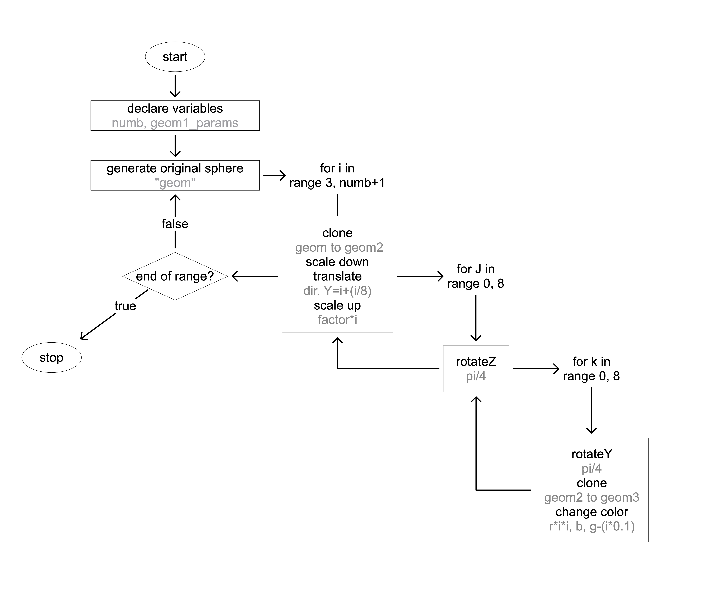

the MOLECULE
Our task for this first assignment was to create an geometry by using nested loops and lists in Pyscript and Three.js. My idea was to create an array of spheres out of an original core sphere (the red one in the middle) and to spin the array around it. I wanted it to appear like a sphere made of spheres, somehow like an atom or some molecules. To de-tensify the middle I scaled the inner spheres down in steps reacting to their positions in the range. But the first array of new spheres were just orientated along the y-axis. That’s why I needed my nested loop inside of the loop that created the first array. The nested loops are the functions that help me rotating the spheres around the z- and y - world axis’ to create that sphere like shape. To make it look better and by playing around I created the changing colors by integrating them in my last loop and using the variable i from the first loop for the different color steps.

have a look at the flowchart:
Drag with your mouse to move, use the wheel/trackpad for zooming in and out!